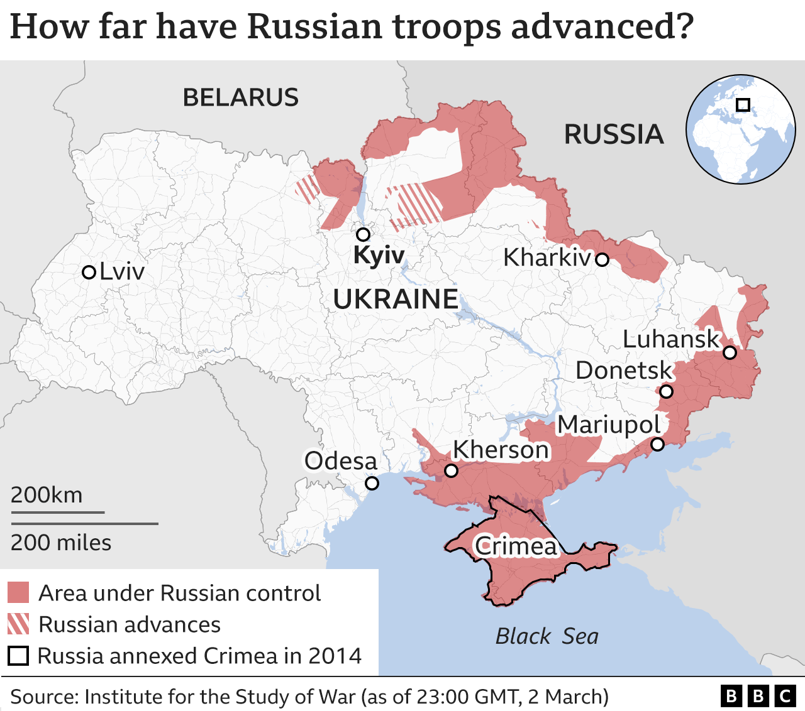

How you can help
About 8 years ago, the Russian army had occupied Crimea and Donbas, immersing Ukraine in a state of war. But Putin never admitted his soldiers were involved. Until the 24th of February, 2022. That day a week ago, almost immediately after Putin announced war against Ukraine, the first bombardments in Kyiv, Kharkiv, Odesa, and Donbas began.
In Ukraine and even across Europe, we have entered unprecedented times. Who could have imagined that a full-scale war involving massive bombardments and shellings of towns with millions of residents would take place in the 21st century?
The Russian army is bombarding our cities and villages, shelling our schools, universities, and hospitals, and killing hundreds of people, including children. Still, Ukrainians do everything in their power and even more to get the Russian occupiers out of their lands.
Donate Money for Humanitarian or Military Relief
Ukrainian state and charity accounts are now open for foreigners to make donations. All of the organizations we are going to talk about are credible. In our article, we have included reliable links. If you search for these charities and organizations yourself, please, double-check all websites, links, and account information. Russia’s war against Ukraine is hybrid, so there are many phishing sites and resources designed to mislead donors.
Ukraine-Based Charity Organizations
National Bank of Ukraine
On the 24th of February, 2022, the National Bank of Ukraine opened fundraising accounts to help Ukrainians resist war. People from the whole world can send money to those accounts to support the army and people who suffer from war consequences.
These accounts accept multiple currencies. They have been established and opened to receive transfers from international partners and donors in both foreign currency (U.S. dollars, euros, UK pounds) and hryvnias.
- Follow this link to find details for the account to raise money for Humanitarian Assistance of Ukrainians.
- Follow this link to find details for the account to raise money for the Armed Forces of Ukraine.
Sergiy Prytula’s foundations
Sergiy Prytula is a Ukrainian TV presenter and public figure. Since the beginning of the Russian-Ukrainian war in 2014, he has been actively volunteering to provide military aid to Ukrainian Armed Forces and humanitarian and financial assistance to children with cancer.
There are two Prytula’s funds that you can support right now:
- Sergiy Prytula Charity Foundation: you can help by finding and purchasing the items listed in the foundation’s itinerary, delivering them to one of their collection points (Lviv, Ukraine, or Przemysl, Poland), or helping them distribute the items within Ukrainian territory. Or you can provide financial aid to one of the charity’s accounts.
- Hell rides: Ukrainian military units urgently need vehicles (SUVs, pickup trucks, ATVs). You can help reduce the need by donating money or contributing the required vehicle yourself.
Foreign charity organizations
Leleka Foundation
The Leleka Foundation raises charitable funds for Ukraine and implements projects promoting health and social welfare. The organization is currently delivering medical supplies that are in short supply in Ukraine. First aid kits, though, are their top priority since emergency responders and frontline fighters don’t have enough of them.
Help Us Help
The foundation Help Us Help, based in Canada, provides medical supplies to volunteer units in Ukraine that need them urgently. The organization distributes supplies to Ukraine using established and trusted networks. Individual First Aid Kits (IFAKs) are their primary focus since Ukrainian volunteer medics caring for war victims urgently need them. Make donations and help medical workers save more lives.
Support Ukrainian Businesses
Here is a list of Ukrainian brands that ship their products to countries outside Ukraine.
Ban Russian Business or Urge Other Brands To Do So
Supporting Russian businesses means supporting the Russian regime. By collaborating with their market players, businesses are investing in numerous war crimes that are occurring now. So we encourage everyone to:
- Not buy products made by Russian brands or manufactured in Russia.
- Withdraw all company assets from Russia and stop being present there.
- Stop working with Russian companies or companies that support or ignore the Russian war against Ukraine.
It will be impossible for Russia to finance a war if we isolate its economy from the outside world. In addition, the Russian society may finally protest and overthrow the dictatorship. If not for the many lost lives of Ukrainians, then at least for their own comfort.